This file is a solution template for the Task 1 of the Quantium Virtual Internship. It will walk you through the analysis, providing the scaffolding for your solution with gaps left for you to fill in yourself.
Look for comments that say “over to you” for places where you need to add your own code! Often, there will be hints about what to do or what function to use in the text leading up to a code block - if you need a bit of extra help on how to use a function, the internet has many excellent resources on R coding, which you can find using your favourite search engine.
Load required libraries and datasets
Note that you will need to install these libraries if you have never used these before.
#### Example code to install packages#install.packages("data.table")#### Load required librarieslibrary(data.table)library(ggplot2)library(ggmosaic)library(readr)library(dplyr)
Attaching package: 'dplyr'
The following objects are masked from 'package:data.table':
between, first, last
The following objects are masked from 'package:stats':
filter, lag
The following objects are masked from 'package:base':
intersect, setdiff, setequal, union
#### Point the filePath to where you have downloaded the datasets to and assign the data files to data.tables# over to you! fill in the path to your working directory. If you are on a Windows machine, you will need to use forward slashes (/) instead of backshashes (\)filePath <-"data/"transactionData <-fread(paste0(filePath,"QVI_transaction_data.csv"))customerData <-fread(paste0(filePath,"QVI_purchase_behaviour.csv"))
Exploratory data analysis
The first step in any analysis is to first understand the data. Let’s take a look at each of the datasets provided.
Examining transaction data
We can use str() to look at the format of each column and see a sample of the data. As we have read in the dataset as a data.table object, we can also run transactionData in the console to see a sample of the data or use head(transactionData) to look at the first 10 rows. Let’s check if columns we would expect to be numeric are in numeric form and date columns are in date format.
#### Examine transaction data# Over to you! Examine the data using one or more of the methods described above.str(transactionData)
We can see that the date column is in an integer format. Let’s change this to a date format.
#### Convert DATE column to a date format#### A quick search online tells us that CSV and Excel integer dates begin on 30 Dec 1899transactionData$DATE <-as.Date(transactionData$DATE, origin ="1899-12-30")
We should check that we are looking at the right products by examining PROD_NAME.
#### Examine PROD_NAME# Over to you! Generate a summary of the PROD_NAME column.summary(transactionData$PROD_NAME)
Length Class Mode
264836 character character
Looks like we are definitely looking at potato chips but how can we check that these are all chips? We can do some basic text analysis by summarising the individual words in the product name.
#### Examine the words in PROD_NAME to see if there are any incorrect entries such as products that are not chipsproductWords <-data.table(unlist(strsplit(unique(transactionData[, PROD_NAME]), "\n")))setnames(productWords, 'words')
As we are only interested in words that will tell us if the product is chips or not, let’s remove all words with digits and special characters such as ‘&’ from our set of product words. We can do this using grepl().
# Over to you! Remove digits, and special characters, and then sort the distinct words by frequency of occurrence.#### Removing digits and special charactersproductWords[, words_clean :=trimws(gsub(" +", " ",gsub("[Gg]$", "", # remove trailing 'g' onlygsub("[^A-Za-z ]", "", words) # remove non-letter/space chars ) ))]head(productWords)
words words_clean
<char> <char>
1: Natural Chip Compny SeaSalt175g Natural Chip Compny SeaSalt
2: CCs Nacho Cheese 175g CCs Nacho Cheese
3: Smiths Crinkle Cut Chips Chicken 170g Smiths Crinkle Cut Chips Chicken
4: Smiths Chip Thinly S/Cream&Onion 175g Smiths Chip Thinly SCreamOnion
5: Kettle Tortilla ChpsHny&Jlpno Chili 150g Kettle Tortilla ChpsHnyJlpno Chili
6: Old El Paso Salsa Dip Tomato Mild 300g Old El Paso Salsa Dip Tomato Mild
# #### Removing digits# productWords <- productWords[grepl("\\d", words) == FALSE, ]# #### Removing special characters# productWords <- productWords[grepl("[:alpha:]", words), ]#### Let's look at the most common words by counting the number of times a word appears and sorting them by this frequency in order of highest to lowest frequency# Split each phrase into individual wordsword_list <-strsplit(productWords$words_clean, " ")# Flatten the list into one vector of wordsall_words <-unlist(word_list)# Count and sort by frequencyword_freq <-data.table(word = all_words)[, .N, by = word][order(-N)]head(word_freq)
# #### Let's look at the most common words by counting the number of times a word appears and sorting them by this frequency in order of highest to lowest frequency# productWords[, .N, words][order(N, decreasing = TRUE)]
There are salsa products in the dataset but we are only interested in the chips category, so let’s remove these.
Next, we can use summary() to check summary statistics such as mean, min and max values for each feature to see if there are any obvious outliers in the data and if there are any nulls in any of the columns (NA's : number of nulls will appear in the output if there are any nulls).
#### Summarise the data to check for nulls and possible outliers# Over to you!sapply(transactionData, function(x) sum(is.na(x)))
DATE STORE_NBR LYLTY_CARD_NBR TXN_ID
Min. :2018-07-01 Min. : 1.0 Min. : 1000 Min. : 1
1st Qu.:2018-09-30 1st Qu.: 70.0 1st Qu.: 70015 1st Qu.: 67569
Median :2018-12-30 Median :130.0 Median : 130367 Median : 135183
Mean :2018-12-30 Mean :135.1 Mean : 135531 Mean : 135131
3rd Qu.:2019-03-31 3rd Qu.:203.0 3rd Qu.: 203084 3rd Qu.: 202654
Max. :2019-06-30 Max. :272.0 Max. :2373711 Max. :2415841
PROD_NBR PROD_NAME PROD_QTY TOT_SALES
Min. : 1.00 Length:246742 Min. : 1.000 Min. : 1.700
1st Qu.: 26.00 Class :character 1st Qu.: 2.000 1st Qu.: 5.800
Median : 53.00 Mode :character Median : 2.000 Median : 7.400
Mean : 56.35 Mean : 1.908 Mean : 7.321
3rd Qu.: 87.00 3rd Qu.: 2.000 3rd Qu.: 8.800
Max. :114.00 Max. :200.000 Max. :650.000
There are no nulls in the columns but product quantity appears to have an outlier which we should investigate further. Let’s investigate further the case where 200 packets of chips are bought in one transaction.
#### Filter the dataset to find the outlier# Over to you! Use a filter to examine the transactions in question.outlier <- transactionData[PROD_QTY ==200]outlier
There are two transactions where 200 packets of chips are bought in one transaction and both of these transactions were by the same customer.
#### Let's see if the customer has had other transactions# Over to you! Use a filter to see what other transactions that customer made.transactionData[LYLTY_CARD_NBR == outlier_customer]
It looks like this customer has only had the two transactions over the year and is not an ordinary retail customer. The customer might be buying chips for commercial purposes instead. We’ll remove this loyalty card number from further analysis.
#### Filter out the customer based on the loyalty card number# Over to you!transactionData <- transactionData[LYLTY_CARD_NBR != outlier_customer]#### Re-examine transaction data# Over to you!summary(transactionData)
DATE STORE_NBR LYLTY_CARD_NBR TXN_ID
Min. :2018-07-01 Min. : 1.0 Min. : 1000 Min. : 1
1st Qu.:2018-09-30 1st Qu.: 70.0 1st Qu.: 70015 1st Qu.: 67569
Median :2018-12-30 Median :130.0 Median : 130367 Median : 135182
Mean :2018-12-30 Mean :135.1 Mean : 135530 Mean : 135130
3rd Qu.:2019-03-31 3rd Qu.:203.0 3rd Qu.: 203083 3rd Qu.: 202652
Max. :2019-06-30 Max. :272.0 Max. :2373711 Max. :2415841
PROD_NBR PROD_NAME PROD_QTY TOT_SALES
Min. : 1.00 Length:246740 Min. :1.000 Min. : 1.700
1st Qu.: 26.00 Class :character 1st Qu.:2.000 1st Qu.: 5.800
Median : 53.00 Mode :character Median :2.000 Median : 7.400
Mean : 56.35 Mean :1.906 Mean : 7.316
3rd Qu.: 87.00 3rd Qu.:2.000 3rd Qu.: 8.800
Max. :114.00 Max. :5.000 Max. :29.500
That’s better. Now, let’s look at the number of transaction lines over time to see if there are any obvious data issues such as missing data.
#### Count the number of transactions by date# Over to you! Create a summary of transaction count by date.library(data.table)transaction_counts <- transactionData[, .N, by = DATE][order(DATE)]head(transaction_counts)
There’s only 364 rows, meaning only 364 dates which indicates a missing date. Let’s create a sequence of dates from 1 Jul 2018 to 30 Jun 2019 and use this to create a chart of number of transactions over time to find the missing date.
#### Create a sequence of dates and join this the count of transactions by date# Over to you - create a column of dates that includes every day from 1 Jul 2018 to 30 Jun 2019, and join it onto the data to fill in the missing day.# Get table of all datesall_dates <-data.table(DATE =seq(as.Date("2018-07-01"), as.Date("2019-06-30"), by ="day"))# Merge tables by DATEtransactions_by_day <-merge( all_dates, transaction_counts,by ="DATE",all.x =TRUE)# Replace NA with 0, order by DATEtransactions_by_day[is.na(N), N :=0]setorder(transactions_by_day, DATE)#### Setting plot themes to format graphstheme_set(theme_bw())theme_update(plot.title =element_text(hjust =0.5))#### Plot transactions over timeggplot(transactions_by_day, aes(x = DATE, y = N)) +geom_line() +labs(x ="Day", y ="Number of transactions", title ="Transactions over time") +scale_x_date(breaks ="1 month") +theme(axis.text.x =element_text(angle =90, vjust =0.5))
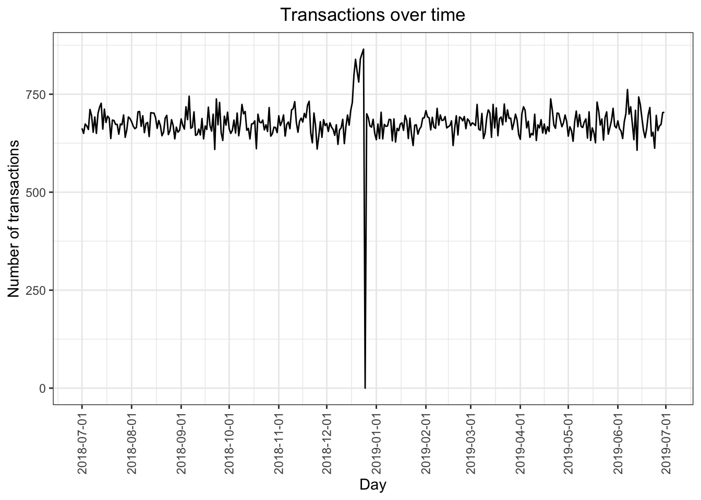
We can see that there is an increase in purchases in December and a break in late December. Let’s zoom in on this.
#### Filter to December and look at individual days# Over to you - recreate the chart above zoomed in to the relevant dates.transactions_by_day_DEC <- transactions_by_day[month(DATE) ==12]#### Setting plot themes to format graphstheme_set(theme_bw())theme_update(plot.title =element_text(hjust =0.5))#### Plot transactions over timeggplot(transactions_by_day_DEC, aes(x = DATE, y = N)) +geom_line() +labs(x ="Day", y ="Number of transactions", title ="Transactions over time") +scale_x_date(breaks ="1 day") +theme(axis.text.x =element_text(angle =90, vjust =0.5))
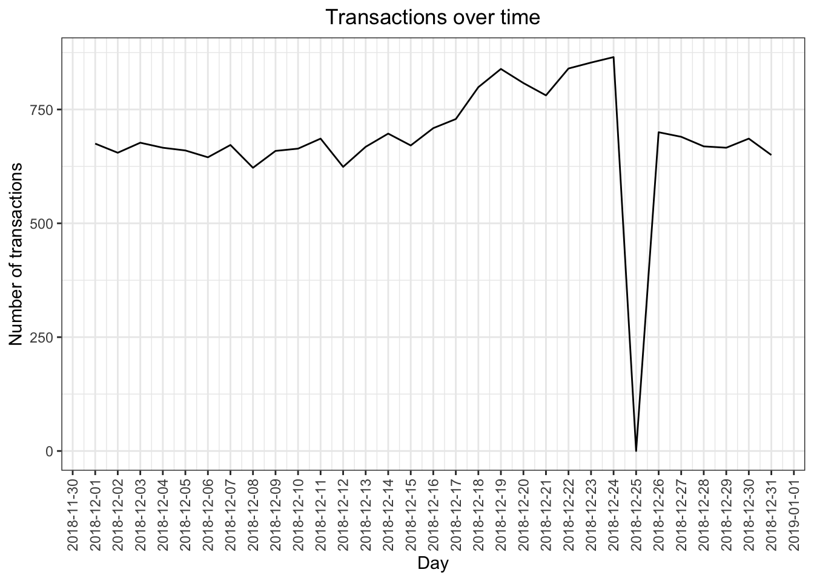
We can see that the increase in sales occurs in the lead-up to Christmas and that there are zero sales on Christmas day itself. This is due to shops being closed on Christmas day.
Now that we are satisfied that the data no longer has outliers, we can move on to creating other features such as brand of chips or pack size from PROD_NAME. We will start with pack size.
#### Pack size#### We can work this out by taking the digits that are in PROD_NAMEtransactionData[, PACK_SIZE :=parse_number(PROD_NAME)]#### Always check your output#### Let's check if the pack sizes look sensibletransactionData[, .N, PACK_SIZE][order(PACK_SIZE)]
The largest size is 380g and the smallest size is 70g - seems sensible!
#### Let's plot a histogram of PACK_SIZE since we know that it is a categorical variable and not a continuous variable even though it is numeric.# Over to you! Plot a histogram showing the number of transactions by pack size.options(repr.plot.width =20, repr.plot.height =5)pack_hist <- transactionData %>%ggplot(aes(x=PACK_SIZE)) +geom_histogram()pack_hist
`stat_bin()` using `bins = 30`. Pick better value with `binwidth`.
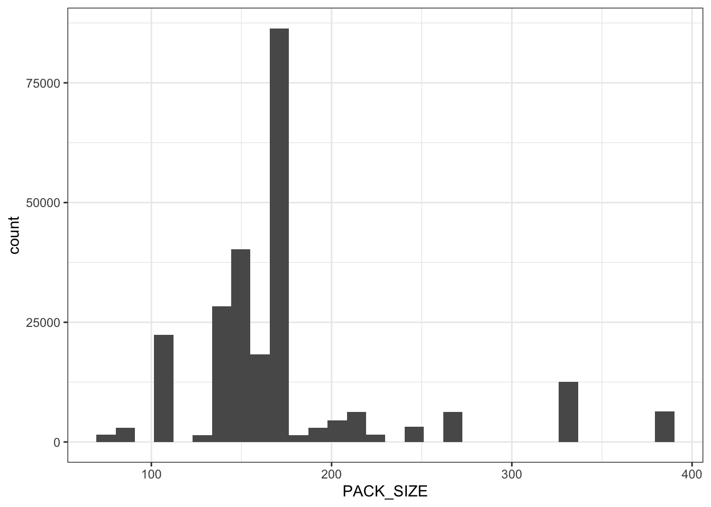
Pack sizes created look reasonable.
Now to create brands, we can use the first word in PROD_NAME to work out the brand name…
#### Brands# Over to you! Create a column which contains the brand of the product, by extracting it from the product name.transactionData$BRAND <-sapply(strsplit(transactionData$PROD_NAME, " "), `[`, 1)transactionData
#### Merge transaction data to customer datadata <-merge(transactionData, customerData, all.x =TRUE)
As the number of rows in data is the same as that of transactionData, we can be sure that no duplicates were created. This is because we created data by setting all.x = TRUE (in other words, a left join) which means take all the rows in transactionData and find rows with matching values in shared columns and then joining the details in these rows to the x or the first mentioned table.
Let’s also check if some customers were not matched on by checking for nulls.
# Over to you! See if any transactions did not have a matched customer.sapply(data, function(x) sum(is.na(x)))
Great, there are no nulls! So all our customers in the transaction data has been accounted for in the customer dataset. Note that if you are continuing with Task 2, you may want to retain this dataset which you can write out as a csv.
fwrite(data, paste0(filePath,"QVI_data.csv"))
Data exploration is now complete!
Data analysis on customer segments
Now that the data is ready for analysis, we can define some metrics of interest to the client:
Who spends the most on chips (total sales), describing customers by lifestage and how premium their general purchasing behaviour is
How many customers are in each segment
How many chips are bought per customer by segment - What’s the average chip price by customer segment
We could also ask our data team for more information. Examples are: - The customer’s total spend over the period and total spend for each transaction to understand what proportion of their grocery spend is on chips - Proportion of customers in each customer segment overall to compare against the mix of customers who purchase chips
Let’s start with calculating total sales by LIFESTAGE and PREMIUM_CUSTOMER and plotting the split by these segments to describe which customer segment contribute most to chip sales.
#### Total sales by LIFESTAGE and PREMIUM_CUSTOMER# Over to you! Calculate the summary of sales by those dimensions and create a plot.# install.packages("viridis")library(viridis)
plot_sales_life_customer <-ggplot(sales_summary, aes(x = LIFESTAGE, y = TOT_SALES_GROUPED, fill = PREMIUM_CUSTOMER)) +geom_col(position ="dodge") +labs(title ="Total Sales by Lifestage and Premium Customer",x ="Lifestage",y ="Total Sales",fill ="Premium Customer") +theme_minimal() +theme(axis.text.x =element_text(angle =45, hjust =1))plot_sales_life_customer
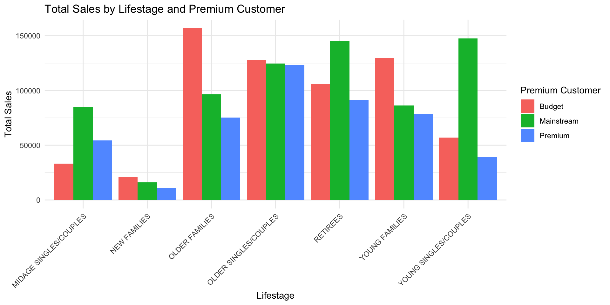
Sales are coming mainly from Budget - older families, Mainstream - young singles/couples, and Mainstream - retirees.
Let’s see if the higher sales are due to there being more customers who buy chips.
#### Number of customers by LIFESTAGE and PREMIUM_CUSTOMER# Over to you! Calculate the summary of number of customers by those dimensions and create a plot.options(repr.plot.width =10, repr.plot.height =6)count_summary <- data %>%group_by(LIFESTAGE, PREMIUM_CUSTOMER) %>%summarise(NUM_IDS =n_distinct(LYLTY_CARD_NBR))
`summarise()` has grouped output by 'LIFESTAGE'. You can override using the
`.groups` argument.
plot_num_life_customer <-ggplot(count_summary, aes(x = LIFESTAGE, y = NUM_IDS, fill = PREMIUM_CUSTOMER)) +geom_col(position ="dodge") +labs(title ="Total Number of Customers by Lifestage and Premium Customer",x ="Lifestage",y ="Distinct Customer Count",fill ="Premium Customer") +theme_minimal() +theme(axis.text.x =element_text(angle =45, hjust =1))plot_num_life_customer
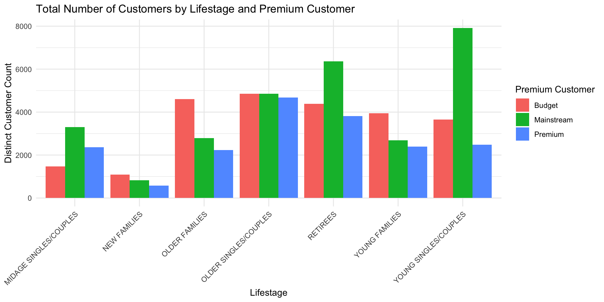
There are more Mainstream - young singles/couples and Mainstream - retirees who buy chips. This contributes to there being more sales to these customer segments but this is not a major driver for the Budget - Older families segment. Higher sales may also be driven by more units of chips being bought per customer.
Let’s have a look at this next.
#### Average number of units per customer by LIFESTAGE and PREMIUM_CUSTOMER# Over to you! Calculate and plot the average number of units per customer by those two dimensions.priceperunit_summary <- data %>%group_by(LIFESTAGE, PREMIUM_CUSTOMER) %>%summarise(PROD_QTY_GROUPED =sum(PROD_QTY, na.rm =TRUE))
`summarise()` has grouped output by 'LIFESTAGE'. You can override using the
`.groups` argument.
plot_avg_life_customer <-ggplot(avg_summary, aes(x = LIFESTAGE, y = AVG_UNIT_PER_CUST, fill = PREMIUM_CUSTOMER)) +geom_col(position ="dodge") +labs(title ="Average Number of Units per Customer by Lifestage and Premium Customer",x ="Lifestage",y ="Average Number of Units per Customer",fill ="Premium Customer") +theme_minimal() +theme(axis.text.x =element_text(angle =45, hjust =1))plot_avg_life_customer
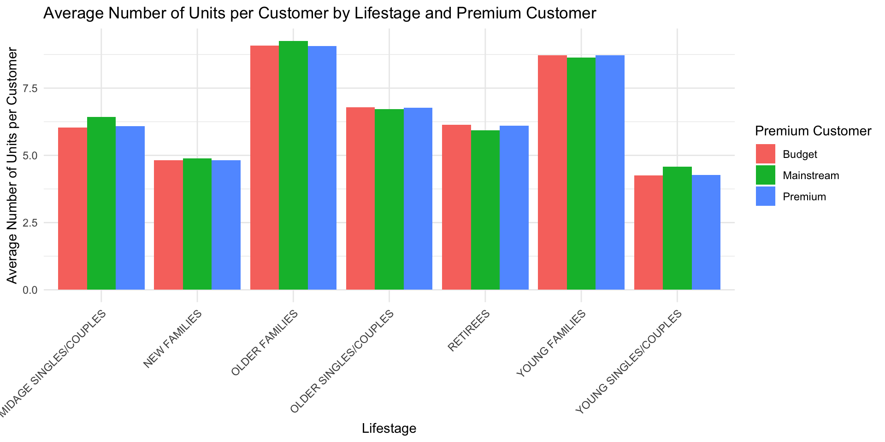
Older families and young families in general buy more chips per customer. Let’s also investigate the average price per unit chips bought for each customer segment as this is also a driver of total sales.
#### Average price per unit by LIFESTAGE and PREMIUM_CUSTOMER# Over to you! Calculate and plot the average price per unit sold (average sale price) by those two customer dimensions.avg_summary$AVG_PRICE_PER_UNIT = (avg_summary$TOT_SALES_GROUPED / avg_summary$PROD_QTY_GROUPED)avg_summary
plot_avg_life_customer <-ggplot(avg_summary, aes(x = LIFESTAGE, y = AVG_PRICE_PER_UNIT, fill = PREMIUM_CUSTOMER)) +geom_col(position ="dodge") +labs(title ="Average Price per Unit by Lifestage and Premium Customer",x ="Lifestage",y ="Average Price per Unit",fill ="Premium Customer") +theme_minimal() +theme(axis.text.x =element_text(angle =45, hjust =1))plot_avg_life_customer
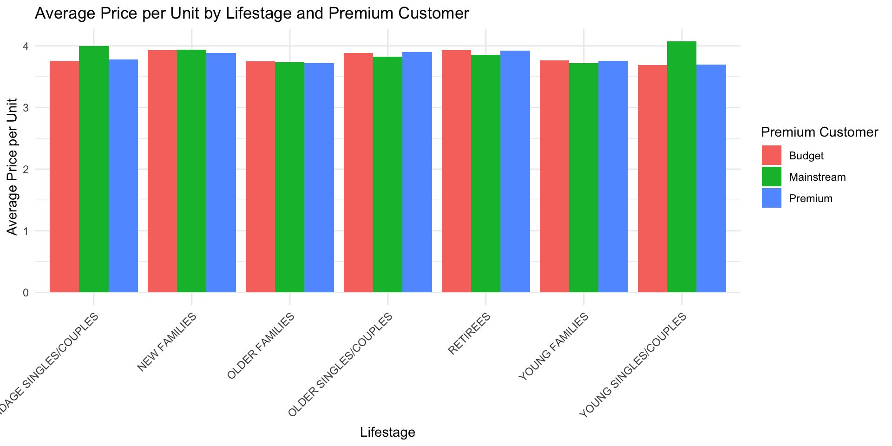
Mainstream - midage singles/couples and Mainstream - young singles/couples are more willing to pay more per packet of chips compared to their budget and premium counterparts. This may be due to premium shoppers being more likely to buy healthy snacks and when they buy chips, this is mainly for entertainment purposes rather than their own consumption.
This is also supported by there being fewer premium Premium - midage singles/couples and Premium - young singles/couples buying chips compared to their mainstream counterparts.
As the difference in average price per unit isn’t large, we can check if this difference is statistically different.
#### Perform an independent t-test between mainstream vs premium and budget midage young singles and couples# Over to you! Perform a t-test to see if the difference is significant.filtered_data <- data %>%filter(LIFESTAGE ==c("MIDAGE SINGLES/COUPLES", "YOUNG SINGLES/COUPLES")) %>%mutate(GROUP =ifelse(PREMIUM_CUSTOMER =="Mainstream", "Mainstream", "Non_Mainstream"))head(filtered_data)
ttest <-t.test(TOT_SALES ~ GROUP, data = filtered_data)ttest
Welch Two Sample t-test
data: TOT_SALES by GROUP
t = 22.456, df = 27326, p-value < 2.2e-16
alternative hypothesis: true difference in means between group Mainstream and
group Non_Mainstream is not equal to 0
95 percent confidence interval:
0.6142873 0.7317767
sample estimates:
mean in group Mainstream mean in group Non_Mainstream
7.563116 6.890084
The t-test results in a p-value of 1.121045^{-110}, i.e. the unit price for mainstream, young and mid-age singles and couples [ARE / ARE NOT] significantly higher than that of budget or premium, young and midage singles and couples.
Deep dive into specific customer segments for insights
We have found quite a few interesting insights that we can dive deeper into.
We might want to target customer segments that contribute the most to sales to retain them or further increase sales. Let’s look at Mainstream - young singles/couples. For instance, let’s find out if they tend to buy a particular brand of chips.
#### Deep dive into Mainstream, young singles/couples# Over to you! Work out of there are brands that these two customer segments prefer more than others. You could use a technique called affinity analysis or a-priori analysis (or any other method if you prefer)library(arules)
Loading required package: Matrix
Attaching package: 'arules'
The following object is masked from 'package:dplyr':
recode
The following objects are masked from 'package:base':
abbreviate, write
# Bar plot to inspect the distribution of objects based on the transactions for item frequencies/supportmax_freq_brand <-max(itemFrequency(trans_data_brand, type ="relative"))arules::itemFrequencyPlot(trans_data_brand, topN =20, col =brewer.pal(8, 'Pastel2'),main ='Relative Brand Frequency Plot',type ="relative",xlab ="Brand",ylab ="Frequency (Relative)",ylim =c(0, max_freq_brand +0.05))
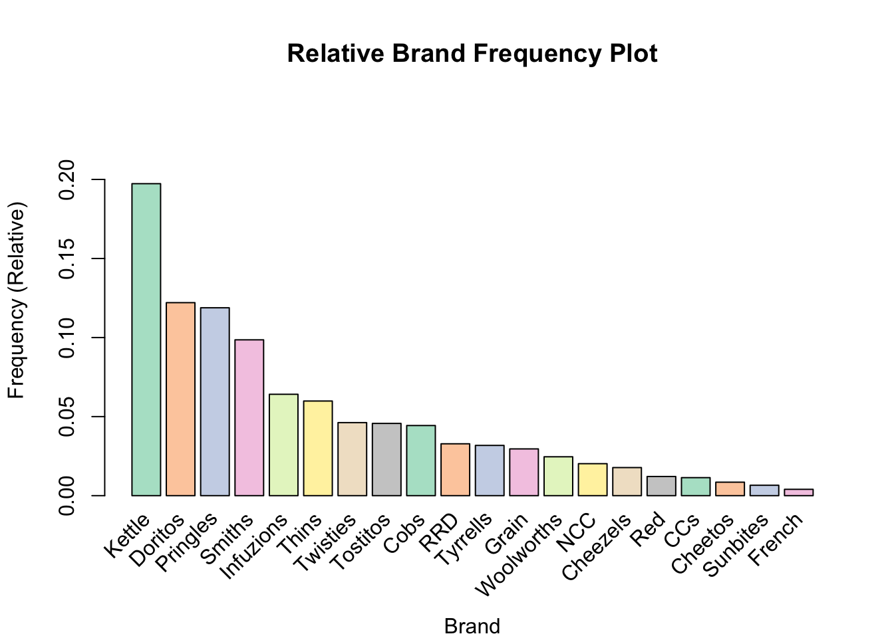
We can see that : Kettle provides the greatest item frequency of 0.1973103, which is significantly greater than the corresponding item frequencies for Doritos and Pringles at 0.1220614 and 0.1188276 respectively. As such, it can be inferred that customers under the segment Mainstream - young singles/couples particularly prefer "Kettle" brand chips.
Let’s also find out if our target segment tends to buy larger packs of chips.
#### Preferred pack size compared to the rest of the population# Over to you! Do the same for pack size.ggplot(filtered_main_ysc, aes(x = PACK_SIZE)) +geom_density(fill ="skyblue", alpha =0.6) +labs(title ="Density Plot of Pack Size",x ="Pack Size (g)",y ="Density") +theme_minimal()
# Transform into transactions# https://www.geeksforgeeks.org/apriori-algorithm-in-r-programming/trans_data_pack <-as(split(filtered_main_ysc$BRAND, filtered_main_ysc$TXN_ID), "transactions")
Warning in asMethod(object): removing duplicated items in transactions
# Get item frequenciesfreqs <-itemFrequency(trans_data_pack, type ="relative")# Convert item names (pack sizes) to numericpack_sizes <-as.numeric(names(freqs))
Warning: NAs introduced by coercion
# Order by numeric pack sizeordered_indices <-order(pack_sizes)ordered_freqs <- freqs[ordered_indices]# Plot as barplotbarplot(ordered_freqs[1:20], names.arg =names(ordered_freqs)[1:20],col =brewer.pal(8, 'Pastel2'),main ="Relative Pack Size Frequency Plot (Ordered by Pack Size)",xlab ="Pack Size",ylab ="Frequency (Relative)",las =2, # rotate x labelsylim =c(0, max(ordered_freqs[1:20]) +0.05))
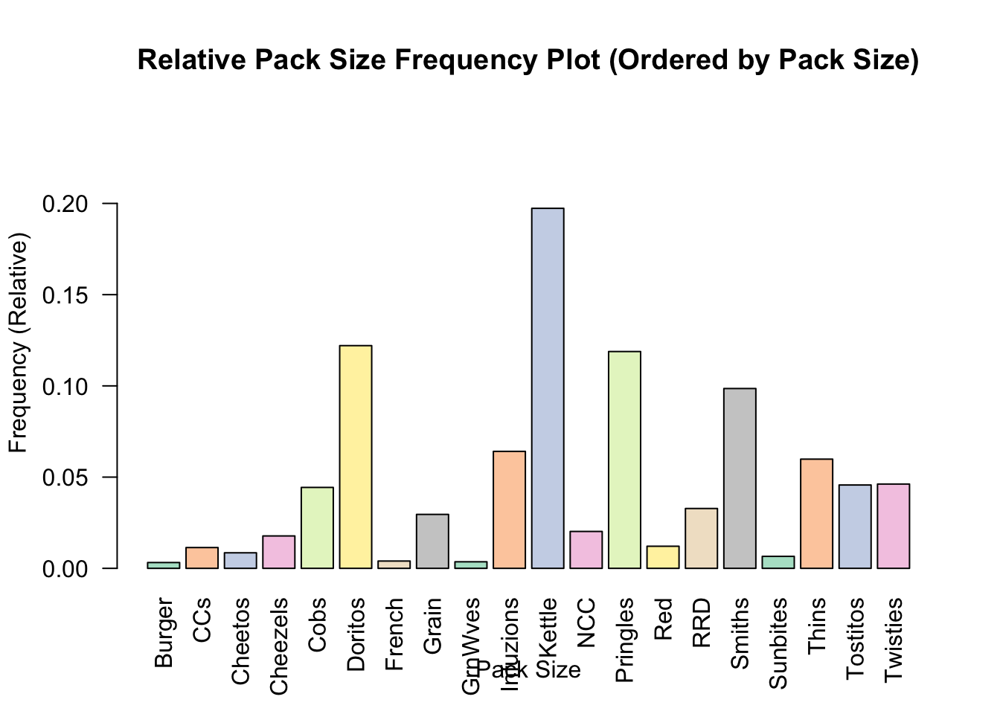
In the density plots, there are more peaks in density on the lower end of the range of PACK_SIZE values for both customers under the segment Mainstream - young singles/couples and across the overall data. As such, while the target segment Mainstream - young singles/couples tends towards purchasing smaller packs of chips, this characteristic does not appear to be unique to the given segment. A similar result is also demonstrated in the item frequency plot ordered by PACK_SIZE.
ggplot(segment_summary, aes(x = PREMIUM_CUSTOMER, y = LIFESTAGE, fill = count)) +geom_tile(color ="white") +scale_fill_viridis(name ="Count", option ="D", begin =0, end =1, direction =1) +labs(title ="Count of Customers by Segment",x ="Premium Customer Status", y ="Lifestage", fill ="Count") +theme_minimal()
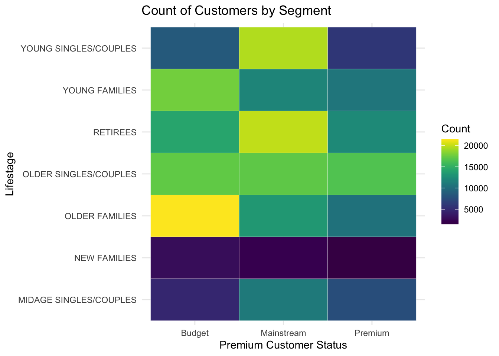
ggplot(segment_summary, aes(x = PREMIUM_CUSTOMER, y = LIFESTAGE, fill = prop_within_lifestage)) +geom_tile(color ="white") +scale_fill_viridis(name ="Proportion", option ="C") +labs(title ="Proportion within Lifestage",x ="Premium Customer Status", y ="Lifestage", fill ="Proportion") +theme_minimal()
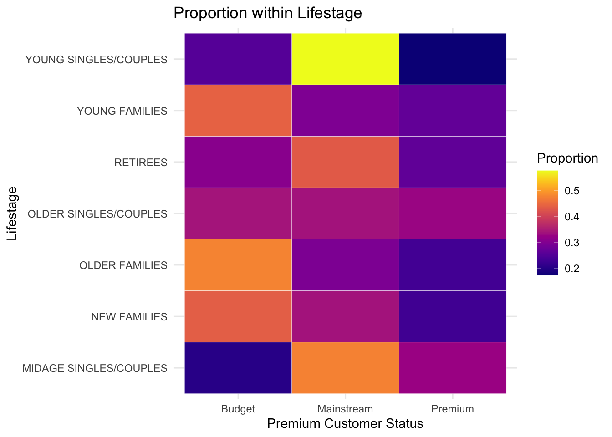
ggplot(segment_summary, aes(x = PREMIUM_CUSTOMER, y = LIFESTAGE, fill = prop_within_premium)) +geom_tile(color ="white") +scale_fill_viridis(name ="Proportion", option ="C") +labs(title ="Proportion within Premium Customer Type",x ="Premium Customer Status", y ="Lifestage", fill ="Proportion") +theme_minimal()